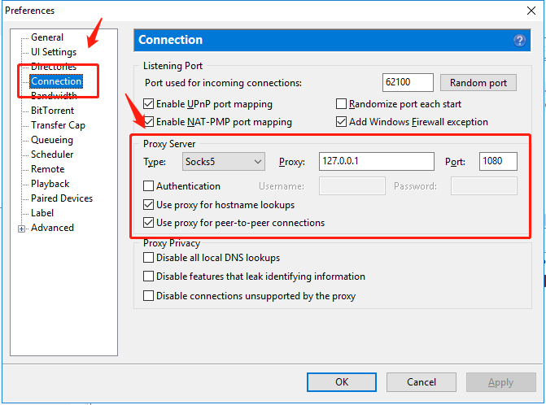

学习本教程，主要收获会有两个。一个是科学上网，一个能够去北邮人bt上传下载资源。详细的内容见下表，如果只为了科学上网，学习1-3即可。需要支持北邮人bt看1-4，服务器管理相关的内容放在了5，章节6主要是一些问题的解决办法。内容主要是以win为例写的，mac、android的科学上网也可以跟着本教程来。内容概要：
- vultr购买VPS服务器
- 在服务器上搭建shadowsocks
- 在win10配置shadowsocks
- 配置utorrent，支持北邮人bt
- 服务器管理说明
- Q & A
1. vultr上购买VPS服务器
要科学上网，需要使用到VPS服务器，本教程使用的是vultr，费用是2.5美元/月，费用是vultr收取的，跟本教程无关。除了vultr也可以使用其他的VPS，效果类似。
一些同学用的搬瓦工，跟我的可能会有些不同。我就遇到有同学的搬瓦工vps本身不支持ipv6，对于上北邮人bt就很麻烦，这是本教程力所不能及的。本教程建议使用vultr，所有使用非vultr的vps，一定要确保支持并可以开启ipv6。不支持ipv6的结果就是对上北邮人bt等ipv6站点有影响，不影响科学上网。
1.1 注册及交费
这一步就非常简单了，用下面的链接注册：
https://www.vultr.com/?ref=7402906
1.2 购买服务器
注册完账户，并充值后。进入以下网址购买服务器。
Server Location自己随意选，但是部分的确没有2.5美元/月的服务器。地区可以全都试试，目前还是能找到2.5美元/月的服务器的。Server Type自己随意，建议用centos。Server Size随意，如果只是做vpn的话，买2.5美元/月的那个就行。Additional Features中，如果想支持ipv6， 访问北邮人bt，那么Enable IPv6必选。
然后点击Deploy Now。
然后跳转或访问以下网址：
就能看到自己的ip地址（IP address）、用户名（Username，通常是root）和密码（password）了。
1.3 检查ip地址是否被墙（可跳过）
这一步，win系统的同学需要打开cmd输入 ping ip并按回车，检查是否被墙。其中ip需要替换为你上一步看到的ip地址。 如果没有出现time out。恭喜这个没问题。如果你不知道如何打开cmd，可以自行百度或google，或跳过此步骤。
如果是mac，cmd替换为“终端”。
2. 在服务器上搭建shadowsocks
2.1 登录服务器
win下，可以使用xshell来登录。 可以下载好xshell。
mac环境，使用“终端”或“iterm2”，一样的效果。
在黑窗口里输入一下代码：
1 | ssh root@ip |
其中ip替换为你自己的ip地址。
然后会弹出弹出一个框，输入你前几步提到的密码，并回车（enter键）。
至此，你已经登陆了。
2.2 服务器上部署shadowsocks
在刚才登录的xshell服务器上，输入以下代码。
1 | wget --no-check-certificate -O shadowsocks.sh https://raw.githubusercontent.com/teddysun/shadowsocks_install/master/shadowsocks.sh |
安装完成后显示效果如下，可以截图保存这些信息下面配置会用的到：
1 | Congratulations, Shadowsocks-python server install completed! |
至此，服务器端的配置已经完成。
3. 在windows系统配置shadowsocks
3.1 下载shadowsocks客户端
Windows：https://github.com/shadowsocks/shadowsocks-windows/releases
Android：https://github.com/shadowsocks/shadowsocks-android/releases
mac：https://github.com/shadowsocks/ShadowsocksX-NG/releases
ubuntu的配置较为复杂，可以参考[4]。
3.2 配置shadowsocks客户端
以win为例，下载，并解压缩后，运行。
输入ip，port，password，及encryption点击ok就可以了。
如果是mac，解压缩后运行，在上面点击那个小飞机，出现下拉栏“服务器-新服务器”-“服务器设置”。同样是输入地址、端口、加密方法、密码，并确定就可以了。
如果是Android，操作类似，请大家自行探索。
有可能需要关闭并重新打开shadowsocks的操作，有可能不需要。
打开你的浏览器，输入 https://www.google.com/ ，那么见证奇迹的时刻到了。
如果是Android，则点击右上角的较好，进去配置服务器、远程端口、密码、加密方式、路由，然后点击右上角的对号进行保存。 然后，选中刚才配置的vpn，然后点击右下角有个飞机的那个圆圈，就可以了。快来测试下吧！
至此，电脑及手机的科学上网已经配置完成。
4. 配置utorrent，支持北邮人bt
两步，第一步将北邮人bt的网址加入支持翻墙的列表，第二步配置utorrent。都很简单。
4.1 配置shadowsocks
首先通过 右键Shadowsocks托盘图标 >-> PAC >-> 编辑 GFWList 的用户规则（或 Edit User rule for GFWList） 来打开user-rule.txt。（mac用户，点击小飞机，“编辑PAC用户自定规则”）
添加如下规则并保存：
1 | ||bt.byr.cn^ |
效果如下图：

此时关闭shadowsocks，并重新打开。在地址栏里输入北邮人bt的网址: https://bt.byr.cn/ 。就可以正常访问了。
4.2 配置utorrent
下载并打开utorrent。这一步就不说了。
windows用户配置方法：按快捷键：“ctrl+P”，打开utorrent的设置。设置左侧找到Connection（中文应该是连接），配置如下图红圈里所示：

mac用户配置方法：按快捷键：“command+,”，打开utorrent的设置。在设置上侧找到Network（中文应该是网络），配置方法跟上图类似。就是配置
proxy server，address，port，配置的内容跟上图对应的一样。同时选中下面的use proxy for hostname lookups及use proxy for peer-to-peer connections。
至此就能愉快的下载了。
本章内容除了可以用于北邮人bt，也可以用于北交大的晨光pt，只要把晨光pt的网址按类似方法加进去就可以了。
试试效果？有问题欢迎留言。下面的5是对于服务器管理用的，一般用不到，可以不看，至此完成了科学上网+支持北邮人bt。
5. 服务器管理说明
此内容是用于对服务器的vpn进行管理使用的，正常情况下是不需要看这个的。
5.1 卸载方法说明：
使用root用户登录，运行以下命令：
1 | ./shadowsocks.sh uninstall |
5.2 配置说明：
单用户配置文件示例：
配置文件路径：/etc/shadowsocks.json1
2
3
4
5
6
7
8
9
10{
"server":"0.0.0.0",
"server_port":your_server_port,
"local_address":"127.0.0.1",
"local_port":1080,
"password":"your_password",
"timeout":300,
"method":"your_encryption_method",
"fast_open": false
}
多用户多端口配置文件示例：
配置文件路径：/etc/shadowsocks.json
1 | { |
5.3 使用命令：
启动：/etc/init.d/shadowsocks start
停止：/etc/init.d/shadowsocks stop
重启：/etc/init.d/shadowsocks restart
状态：/etc/init.d/shadowsocks status
6. Q & A
本小结是对配置有问题的一些问题的回答。
- google上不去。
这是shadowsocks都没配置好。出问题的地方可能有 一、你的服务器ip被墙了。可以尝试在cmd中敲ping ip，看看是否有time out。有time out说明你连不上服务器的，我在家就经常连不上，在公司就没问题。一个办法就是销毁服务器，重新申请台服务器的ip。我换了好几个ip都没用，我感觉我是家里的网可能有问题。 二、对于很多问题，可以尝试换个浏览器、重启shadowsocks之类的看看能不能登录。 三、看报什么错。如果是500 Internal Privoxy Error。可以修改端口号、加密方式。一些端口号可能被重点关照了，建议修改为较小的端口号， 比如一千以内的。楼下也有修改加密方式解决问题的。四、自行根据error上网搜相关资料。
- google能上，bt上不去问题。
google能上，说明shadowsocks配置没问题。bt相对于普通的科学上网，多的步骤就三个，一、vps支持ipv6，二、北邮人bt的网址加入到走外网名单，三、utorrent的配置。 主要检查一和二。
- bt可以上网，utorrent配置找不到或下载没速度。
那就是utorrent配置的问题了，有的同学的utorrent配置和我给的有些出入，建议更新utorrent到最新版，或许就找到对应的配置地方了。
- 500 Internal Privoxy Error
首先看是否能上google，如果不能，尝试修改端口号、加密方式。
如果能上能上google，不能bt，就是问题2。
参考资料：